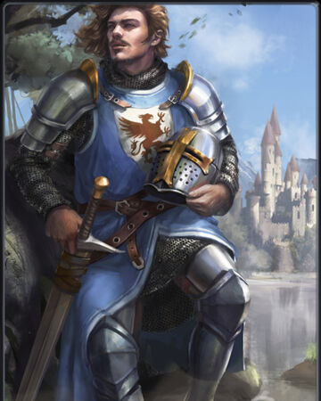

Sir Gawain
The Maiden Knight

An Artistic Rendition of Sir Gawain
Some Details About Sir Gawain
- His sword, Galantine, draws power from the sun, to represent Gawain's unfaltering sense of justice and glory. It is said that at the Sun's Zenith, Gawain wields the power of twelve men.
- He is the son of Arthur's Sister, thus making him Arthur's closest male relative.
- He is described as the most curteous knight in Camelot, often serving as an intermediary between foreign knights and Arthur's Court.
- He is the champion of all women, earning the title "The Maiden Knight" by virtue of his respect for women.
- Though known for his virtue, Gawain is not Spiritual enough to even quest for the Holy Grail
- When he falls in battle, his death is mourned by all, even the man who slayed him.
"Ever faithful in five things, each in fivefold manner, Gawain was reputed good and, like gold well refined, He was devoid of all villainy, every virtue displaying In the field. Thus this Pentangle new He carried on coat and shield, As man of troth most true And knightly name annealed."
-Sir Gawain and the Green Knight
This page is devoted to my interpretation of Sir Gawain. If you wish to know more about the many different interpretations of Sir Gawain, I encourage you to look to his Wikipedia page.